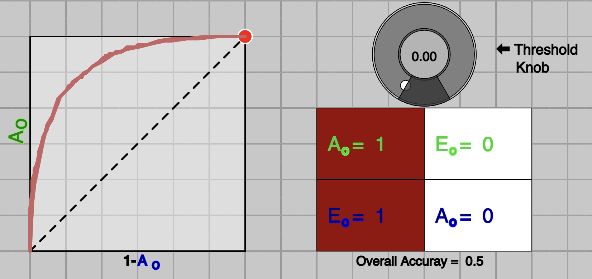

In Machine Learning, ROC is one of approches to evaluate the quality of a trained model by computing the AUC (Area under the curve) of ROC. Although, it is straightforword to understand that higher the AUC better it is, which is good enough to compare two or more models for the purpose of model selection.
However, the interpretation of the value of AUC is not so intutive. The objective of this web-based interative widget is to help develop the missing intutive insight of AUC of ROC.
In addition, this widget helps to undertand the tuning of a threshold for a trained model, in order to accommondate the cost of misclassification of classes.
Description of the widget components:
Above widget represents, the binary class problem, class 1 is green ($C_{green}$) and class 2 is blue ($C_{blue}$).
This is specifically for the case, where a trained model on the data learns a single latent variable (say $x$) such that $input \rightarrow x$. Based on value of $x$, a posterier probability is computed for each class, as follow;
$$P(C_{green} |x) \rightarrow Green Curve$$
$$P(C_{blue} |x) \rightarrow Blue Curve, $$
which are the green and blue curves in the graph above.
It depends on the problem, data and a model, how these two curves look like, in terms of their distribuation shape and their distance from each other. For simplicity, we condider a gaussian distribuation and
we have control over their means $\mu$ and standard deviations $\sigma$. You could try to change $\mu$ and $\sigma$ from top-left ($C_{green}$) and top-right ($C_{blue}$) sliders.
There are two boxes to write the number of sample for each class, labeled as N1 and N2. After typing the values for N1 and N2, by clicking on will generate samples from the respective distribuations.
Another important component of the widget is to control the threshold value to make a classification decision. This threshold value is the one used to create ROC curve.
This can be done by using Threshold knob or slider just above it. By moving it, you could see a trace of ROC on bottom-left and respective confusion matrix.
Confusion matrix contains following four values;
$A_o$ $-$ Accuracy of green class ($C_{green}$)
$A_o$ $-$ Accuracy of blue class ($C_{blue}$)
$E_o$ $-$ Error rate of green class ($C_{green}$)
$E_o$ $-$ Error rate of blue class ($C_{blue}$)
Making decision:
There are usually, three ways to make decision to classify given sample, based on posterier probability. These are as follow:
One of the straightforword way to make a decision is to compare values of both $P(C_{green} |x)$ and $P(C_{blue} |x)$ for given $x$ and see which one is greater.
if $P(C_{green} |x) > P(C_{blue} |x)$ then sample is classified as class green, otherwise class blue.
Second approach is to compute normalized probability for each class. For binary class, computing normalized probabilty score for one class is enough. For our example of green and blue class, normalized probability score for green class can be computed as follow;
$$ P_N(C_{green} |x) = \frac{P(C_{green} |x)}{P(C_{green} |x)+P(C_{blue} |x)}$$
These normalised probabilty scores for each class ranges from 0 to 1, which are shown as dark green and dark blue curves, resepectively. Sum of normalised probabilty scores for given $x$ is equal to one.
Try clicking button to identify these curves.
A decision to classify is based on either $P_N(C_{green} |x)$ or $P_N(C_{blue} |x)$.
For binary class, if $P_N(C_{green} |x) >0.5$, sample if classified as green class, else blue class.
Similarly, $P_N(C_{blue} |x)$ can be computed and same decision can be made based on it.
Third way is to compute the ratio of probability scores;
$$T_g = \frac{P(C_{green} |x)}{P(C_{blue} |x)}$$
$T_g$ ranges from 0 to very high ($\infty$). If $T_g>1$ then sample is classified as class green, else class blue. Similarly, $T_b$ can be computed.
Try clicling to see the computed ration for each class.
All three approaches produce similar results, however, approach (2) and (3) have extra property to allow us to choose a threshold. Approach (2) might be very familier to most, as majority of the models produce this score as output,
which is consider as probality of sample being in a class. And to make a decision for binary class problem, 0.5 (USUALLY) threshold is chosen. These threshlod allow us to incorparate cost of missclassification of a class.
If missclassification cost of $C_{blue}$ is higher than $C_{green}$, then we could increase threshold from 0.5 to say 0.8, which is to say that we classify a sample to green only if we are 80% confident, else we will classify sample to blue.
In this case, we will have higher $E_o$ than $E_o$, however overall cost will be lower.
Similarly, using approach (3), using threshlod $T_g>1$ for green class, means, if $P(C_{green} |x)>P(C_{blue} |x)$. To incorporate cost, we could increase threshold to 10 instead of 1.
This means, we classify a sample to $C_{green}$ if $T_g>10$, which entails that $P(C_{green} |x) > 10*P(C_{blue} |x)$.
A detailed explanation on this will in our Book - Principles of Machine Learning
ROC Curve, Cost and Three cases
ROC Curve
A curve of ROC for any trained model is produced by using either approach (2) or (3) (see previous section). Approach (2) is much easier to use, since $P_N(C_{green} | x)$ ranges from 0 to 1. To make a decision usually 0.5 threshold is used, which is to say,
if probability of sample being green is more than 0.5, we classify sample as $C_{green}$. However, to produce ROC curve, we start varying threshold from 0 to 1, and compute accuracy and error rate of each class at every value of threshold. This can be seen in above
widget by either changing Threshold Knob or slider. At every value of threshold, two values, namley; $A_o$ and $A_o$ are used. On a square plot, trace of $A_o$ Vs $1-$$A_o$
is plotted, which is ROC Curve. As shown in Figure 1 below.
Fig.1 - 3 Points on ROC Curve.

Fig.2 - At threshold=0
In above figure (Figure 1), there are three points marked at threshold value of 0, 0.5 and 1. Notice the red-dot on the curve at threshold 0, which is at top-right corner, where
$A_o$$=1$ and $A_o$$=0$ (e.g. $1-$$A_o$$=1$).
Since $P_N(C_{green} | x)$ ranges from 0 to 1 threshold =0 means, every sample will be classified as $C_{green}$, which will produce 100% accuracy for class-green, (all samples in $C_{green}$ correctly classified as green).
However, this will lead to 0% accuracy for class-blue ($C_{blue}$). This is shown in Figure 2, above. Similary, another extream point of threshold=1 can be seen at bottom-left, producing $A_o$$=0$ and $A_o$$=1$.
We avoid to use terms like True Positive Rate, False Positive Rate, Precision, Recall, Sensitivity and Specificity, as they have meaning for detection problem only. Detection problem is a special case of Classification problems, which is limited to binary class.
Terms like Accuracy Per Class, and Error Rate are more generalised for classification problems and they are easily extended to multi-class problems.
A middle ground is a of threshold of 0.5, usually considered in case of equal cost of misclassification for both classes. In above figure, it can be seen, that threshold of 0.5 is leading to good enough accuracy for both classes.
Cost of missclassification
A system, where missclassification of one class is higher than other, 0.5 threshold or overall accuracy of the systems is not considered, instead, a different threshold is choosen.
Consider an example of a system that diagnose a disease, which can be cured by very aggressive and intensive medication, however medication produces undesirable side-effects affecting life-style. Now in this case,
cost of misdiagnosis is huge. You do not want to medicate any petient who might not have disease. Also, a doctor saying, I am 51% sure that you have a disease is not good enough. As a petient, you want your doctor to
be confindent, definitely, more than 51%. In such cases, you could probabily choose a threshold on (2) approach to somewhere 0.8 or 0.9.
Now question is why do we need to plot ROC Curve, and how do we use it to compare two models. To answer this question, let's examine three cases in next section.
Comparing models with AUC
We will see three cases here, case of an ideal system, usual-case system and worst-case system.
Idea model (desired):
A good model is one which learns latent variable $x$ such that, green and blue curves of distribuation are far away. In other words, a value of $x$ is very different for a green class ($C_{green}$) then blue class ($C_{blue}$). In that case, a simple threhold on variable $x$ would be enough to discern green and blue classes.
Or using approach (2), threshold with 0.5 will be good enough, becuase, all the values of $P_N(C_{green} | x)$ will be far away from 0.5.
This can be seen in Figure 3 (below), where model learns a $x$ such that, all the values for green class are one side and for blue class on the other side. It's corresponding ROC curve is shown in Figure 4 below. In this case, as it can be seen that
the curve is occupying all the area and computed Area Under the Curve (AUC) will be maximum which is 1.
To visualise this, use above widget in default setting, and move green and blue curves far away by using slider $\mu$ on left-top and right-top, then click on button, then use either slider or knob to create ROC Curve. They should look like as shown in figures below.
Fig.3 - An ideal-case system.
Fig.4 - ROC of an ideal-case system
Usual-case model:
Eventhough, we like a model work as ideal-case, in practive, they rarely are that good. If your model really work like that, beware, there must be something wrong.
In usual-case, distribuation of posterier probabilities of classes overlaps, typically, they look like as shown in Figure 5. Their respective ROC curve also look like as shown in Figure 6.
It can be seen, the curve is not not occupying all the area, which is less than 1.
Again, to visualise this, use above widget.
Fig.5 - Usual-case system.
Fig.6 - ROC of usual-case system
Worst case model:
A worst case sceanario would be, when distribuation of posterier probabilities completly overall, and no value of threshold can be better than chance level or flipping a coin.
Changing threshold value from 0 to 1 will produce a curve on diagonal line, which will lead to 0.5 of AUC (half of the unit-square).
Again, to visualise this, use above widget.
Fig.7 - A worst-case system.
Fig.8 - ROC of a worst-case system
Examining all the three cases should give you an insignt about the AUC. The value of AUC indicates the distance between distribuation learned for two classes by the model. Higher the value, far away distribuations are, better a model is.
Some final notes:
Examining the worst-case sceanario, a very quick thought might come to mind, that what-if blue curve goes to right side and green goes to left, wouldn't that be even worst?
Answer in no, try it and see. They are still good to make a decsion.
It is said many times in many books and courses that for the worst-case sceanario AUC would be 0.5. However, sometimes, after training a model, producing a curve on a testing data will look as it goes below diagonal line,
which leads to AUC $<0.5$. This is actually normal, it only means, that model's rule to classify is opposite for testing data than from training.
A horizontal black line moves up and down with threshold knob, and decision on dark-green curve $P_N(C_{green} | x)$ is used. Try using "Flip decision", it will use dark-blue curve $P_N(C_{blue} | x)$ for the decision.